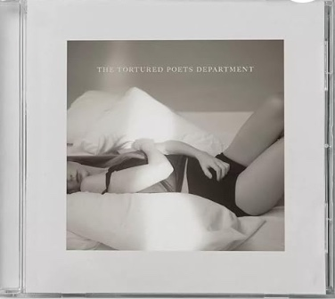

Red featured on the Red album is my favorite song by Taylor Swift because of its upbeat nature and catchy chorus. However, it is much then just a satisfying melody, it’s a lyrical masterpiece. In the song Swift colorates the stages of love and heartbreak through colors describing loving as red and losing as grey. It allows listeners to visually picture her emotions in a thats unique and creative.
Dear John
Dear John featured on the Speak Now album is one of my favorite ballads by Taylor Swift because of it’s lyrically advanced verses. Within the song she truly captures the essence of being devastating heartbroken at a young age. One’s first heartbreak always hurts the worst because you tend to love in a way that is innocent and pure; putting everything you can into that relationship because you haven’t yet felt what it’s like to lose someone you love in a romantic way. I also feel it’s one of her songs where you can actually hear the pain in her voice as she sings it making it more authentic.
All Too Well (10 Minute Version)
All Too Well (10 Minute Version) featured on the Red album is one of Swift’s most popular songs for its honest representation of the aftermath of a toxic relationship. I believe many connect with this song as much as they do because it captures the moment you realized what you have been going through and the amount of effort you’ve exhausted trying to make it work. The song is sad, yet, angry, but also hopeful; expressing every emotion you tend to feel when the truth starts to set and see it for what it really is.

LOML
LOML featured on Swift’s newest album The Tortured Poets Department is in my one of her saddest and lyrically advanced songs she has written. It starts by describing the empty promises that were made between her and her past partner; going through the debilitating feelings of watching someone who was once the love of your life turn into a total stranger. The song’s creativity takes flight towards the end when she changes the meaning of the song’s title from love of my life to loss of her life; expressing how the essence of time has changed their entire story from triumph to tragedy.
Mine
Mine featured on the Speak Now album was my favorite song by Taylor Swift for years because of it’s story telling ability. It’s extremely challenging for an artists to eloquently describe years worth of moments into one song, however this ballad does it with ease. It start by describing a young couples story of meeting in college, to moving into together, to then getting married and having children. During the bridge the song then describes the couple having a fight that almost ends their relationship, but instead they overcome their trials and live a happy life as one.
Wildest Dreams
Wildest Dreams featured on the album 1989 is a catchy yet intriguing song that describes the feeling of jumping into a relationship that you can tell is going to end from the very start. Through a breathy chorus she asks her lover to remember her always when he decides to part from; romanticing the idea of loving to loose in the end.
The Prophecy
The Prophecy featured on the album The Tortured Poets Department has been one of my most listened songs this year. I have yet to hear a song that describes the feeling of utter defeat from experiencing a number of failed relationships. She paints herself as being cursed and charaterizes herself as infant begging to be saved from the harsh realities of her fate. It’s a haunting ballad that leaves me speechless each time I listen to it.